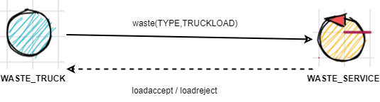

PRECEDENTI
CHECKPOINT : REQUISITI
Modello dei requisiti
- modello_requisiti
- path : CoreWasteService/src/modello_requisiti.qakt
- 
Per eseguire il modello, rinominare il file in modello_requisiti.qak, eliminare le sorgenti generate e rigenerare il sistema
core-functionality - Punti aperti
When the load is accepted , the transport trolley reaches the INDOOR, picks up the material , goes to the proper container and settles the material.
During this activity, the WasteService blinks the Led- Problema: innesco procedura proattiva di Transport_trolley
(denominato in seguito issue_trolley) - Problema: comunicazione da parte del Transport_trolley della fine del prelievo dei materiali, il truck solo dopo il prelievo libera INDOOR ( Q2 )
(denominato in seguito pickup) When the deposit action is terminated , the transport trolley excutes another deposit command (if any) or returns to its HOME.
- Problema: comunicazione da parte del Transport_trolley della terminazione del lavoro assegnato
(denominato in seguito work_complete) - Problema: al Transport_trolley devono arrivare informazioni riguardanti l'incarico successivo
(denominato in seguito next_work)
alarm : non considerato
statusGUI : non considerato
CHECKPOINT : PROBLEMA
Modello del problema
- modello_problema_conoscenza
- path : CoreWasteService/src/modello_problema_conoscenza.qakt
-

| PROBLEMA | soluzione adottata |
|---|---|
| issue_trolley | request-response |
| informazione posizione containers | il payload é il nome del container |
| pickup : Trolley to Waste_Service | evento |
| pickup : Waste_Service to Waste_Truck | request-response, sfruttando R2 loadaccept |
| work_complete | request-response, sfruttando proposta response di issue_trolley |
| next_work : Waste_Service to Trolley | stesso di issue_trolley |
| next_work: produttore-consumatore | nuove richieste sono messe in coda al Transport_trolley |
Esecuzione automatica dei test
In caso si rigenerassero i sorgenti con l'interprete qak, aggiungere alla Classe : CoreWasteService/src/it/unibo/transporttrolley/Transporttrolley.kt il seguente import :
import java.util.*
Comandi
Build: gradle build -x test
Testing: gradle test
Risultati test
ls build/reports/tests/test/
ls build/test-results/test/
CHECKPOINT: PROGETTAZIONE
Modello del progetto
- modello_progetto : CoreWasteService
- path : CoreWasteService/src/modello_progetto.qak
- modello_progetto : PathPlanner
- path : PathPlanner/src/pathplanner.qak
- modello_progetto : BasicRobot
- path : BasicRobot/src/basicrobot.qak
-

Workflow Testing
## In WasteService
cd BasicRobot ; ./gradlew build
cd PathPlanner ; ./gradlew build
cd CoreWasteService ; ./gradlew build -x test
./launchall.sh
firefox http://localhost:8090/
cd CoreWasteService ; ./gradlew test
Workflow utilizzo
## In WasteService
./launchall.sh
firefox http://localhost:8090/
cd TruckSimulator ; ./gradlew -q tui
CHECKPOINT: INTERRUPT
Requisiti
The Sonar is used as an ‘alarm device’: when it measures a distance less that a prefixed value DLIMT, the transport trolley must be stopped. It will be resumed when Sonar detects again a distance higher than DLIMT.
a Sonar and a Led connected to a RaspnerryPi. The Led is used as a warning devices, according to the following scheme:
3. When the load is accepted, the transport trolley reaches the INDOOR, picks up the material, goes to the
proper container and settles the material. During this activity, the WasteService blinks the Led
Problemi
| PROBLEMA | soluzione adottata |
|---|---|
| distance- modalità | pattern observer |
| distance- interazione | evento; il singolo messaggio non è importante perchè quello successivo è simile |
| threshold | componente stand-alone da sonar e trolley |
| threshold- contesto | contesto trolley, il contesto del sonar è indipendente dall'applicazione |
| threshold- interazione | evento; "eredito" la caratteristica della distanza misurata dal sonar (la singola informazione non è importante) |
| interrupt- component | PATH_EXECUTOR con possibilità di interruzione, la singola mossa in esecuzione viene terminata |
| led- frequenza | HOME ed STOPPED vengono inviati "una volta" e non ri-trasmessi, MOVING viene inviato ad ogni effettivo movimento |
| led- interazione | evento (?) sicuro per il blink (singolo messaggio non importante), ma non tanto sicuro per HOME e STOPPED |
| led- componente | componente stand-alone, che raccoglie da tutte le fonte ed è l'unico ad emettere trigger per il led |
| led- coerenza ed ordinamento | logica del ignorare messaggi che sono stati inviati prima (timestamp inferiore) dell'ultimo ricevuto |
Modello del Progetto
CHECKPOINT : StatusGUI
Requirement analysis
The WasteService must create a WasteServiceStatusGUI that shows to the Service-manager
- visibilità: la gui è dedicata al Service-manager?, altri utenti hanno possibilità di accedere a queste informazioni?
the current state of the transport trolley and it position in the room
- state-precision(trolley) : cosa si intende per stato del trolley? Esecuzione, Stopped e Home (Idle)?
- position-precision : fino che precisione arriva la posizione? Devo comunicare esattamente le cordinate? Devo comunciare il "luogo" (Home,Plastic,Glass,Indoor)?
the current state of the Led
- state-precision(led) : cosa si intende per stato del led? la funzione che sta eseguendo in questo momento(on, off, blink)?
the current weigth of the material stored in the two waste-containers
- weight : l'utente deve conoscere il peso attuale, non la capacità rimanente
Modello dei requisiti
Non c'è nessuna interazione dettata da requisiti, so solo che interagirà con il sistema un componente di nome WasteServiceStatusGUI la quale può essere acceduta sicuramente da un utente nominato Service-manager
polling vs push
Un punto non citato dai requisiti ma di spontanea riflessione, la GUI da progettare è un componente passivo, ovvero che non deve modificare nessun dato e deve inviare dati alle altre parti del sistema attorno progettato negli sprint scorsi, quindi la GUI deve solo ricevere gli aggiornamenti inviati da altre parti del sistema, senza richiederli (tranne informazioni di keep-alive).

Sistema Finale
Configurazioni possibili a deploy time
- SONAR: Simulated, Endless, StopTimer
- LED: Simulated
- SERVICE: Dlimit
- Locazione di deploy della maggior parte dei servizi (specificato più avanti)
Configurazioni compile-time
PathExecInterrupt
- Conoscenza e locazione degli altri contesti del sistema
- Deployment setting dei propri attori
Qak
- Cambiare disposizione degli attori e dei contesti presenti, non riesco solo tramite configurazione spostare attori in nuovi contesti
- CoapResource : l'indirizzo viene compilato direttamente nelle sorgenti auto-generate, se la risorsa cambia locazione devo avere il codice sorgente, cambiare l'indirizzo della risorsa e ricompilare
Proposte di migliramento
QAK
Qactor, nome
- Per l'implementazione della primitiva WhenTime , l'attore che lo invoca non può avere caratteri speciali come parte del proprio nome
CodedQactor, nome
- Nella scrittura del file qak, un codedQactor può avere lettere maiuscole, senza sollevare nessun errore sintattico; i messaggi aventi qual attore come destinatario, hanno nel campo destinatario il nome dell'attore tutto minuscolo , e tale messaggio non viene recapitato correttamente
Formato messaggio
- I messaggi vengono dati in pasto ad un interprete tuprolog , il payload dei messaggi però non viene fatto escape dei caratteri utili per prolog, e questo potrebbe portare errore
build.gradle, pl nella distribuzione
- Visto che vengono generato i file .pl, conoscenza del sistema in forma dichiarativa, che serve anche nella distribuzione, sarebbe opportuno aggiungere la seguente riga nel file di building auto-generato
distributions {
main {
contents {
from './contextname.pl'
from './sysRules.pl'
}
}
}
MQTT
- Nell'implementazione attuale posso specificare solo un unico canale MQTT della quale sono sia publisher che subscriber; questo implica che per far comunicare il mio sistema tramite MQTT, tutti i contesti sono publisher ed subscriber dello stesso topic.
- Il problema esiste soprattutto per i messaggi di natura evento, i quali qak non fornisce primitive per emit esclusivamente locali , quindi usando MQTT l'application designer ha solo due opzioni
- 1. Usare MQTT, tutti gli eventi vengono propagati a tutti i contesti del sistema
- 2. non usare MQTT
- questo limita enormemente i scenari possibili di utilizzo di questo protocollo
COAP OBSERVER
- nella scrittura del modello, observeResource accetta come parametro solo Qactor, non ExternalQactor
- Il codice generato inoltre scrive direttamente all'interno della classe l'indirizzo al momento di generazione
- rendendo presente una discrepanza di configurazione tra la dichiarazione di un attore esterno nel file .pl, e l'osservatoreCOAP
- L'application designer suggerisce che la locazione dell'indirizzo COAP della risorsa debba essere risolto a runtime, durante la fase di boostrap, leggendo dal file *.pl, in modo analogo alla creazione dei proxy per gli attori remoti quando si imposta il contesto locale
Wrapper Java
modifiche effettuate ad unibo.actor22, wrapper java delle funzionalità qactor sviluppato dalla software house
Eventi
- Ricezione di eventi remoti
- IDEA: Handler del contesto quando riceve un messaggio non solo fa distinzione tra richiesta o non richiesta, i quali secondi li tratta come dispaccio, ma verifica anche se siano eventi.
- ContextMsgHandler.java riga 29 e riga 50-55
- Propagazione di eventi locali a contesti remoti conosciuti
- BUGFIX: la tabella dei contesti remoti identifica i proxy per indirizzo e non indirizzo+porta , questo crea problemi quando sulla stessa macchina ho più contesti
- IDEA: quando viene generato un evento, EventMsgHandler non solo controlla gli attori locali, ma inoltra tale evento anche a tutti i contesti conosciuti
- WORKAROUND IMPLEMENTATIVO: I proxy vengono effettivamente generati quando c'è almeno un attore conosciuto del contesto remoto; se voglio propagare ad un contesto remoto, devo per forza aggiungere un attore remoto (anche se non esiste), per generare il proxy
- controllare storico modifiche git per dettagli sull'implementazione
- Qak22Context.java
- EventMsgHandler.java
- esempio di utilizzo, riga 19 esempio di workaround
github: